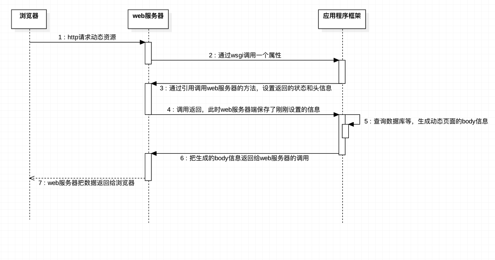
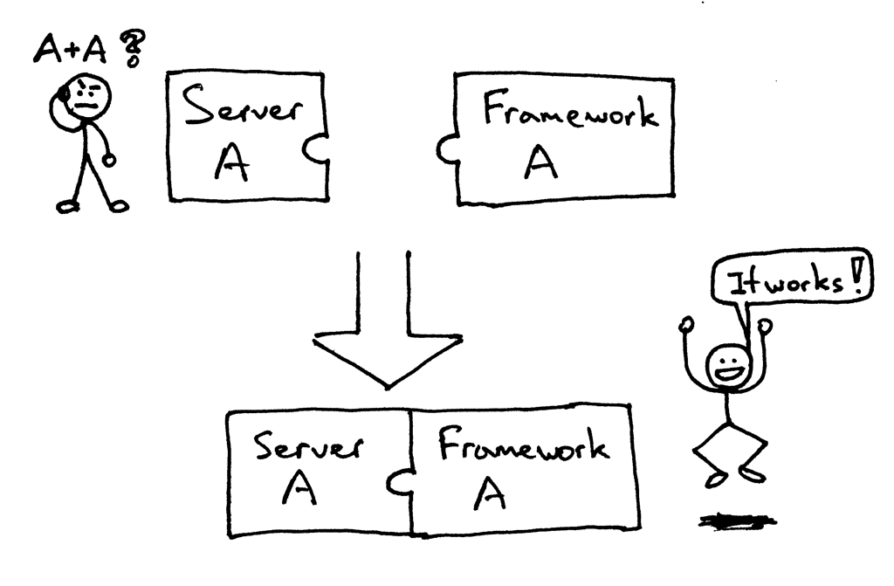
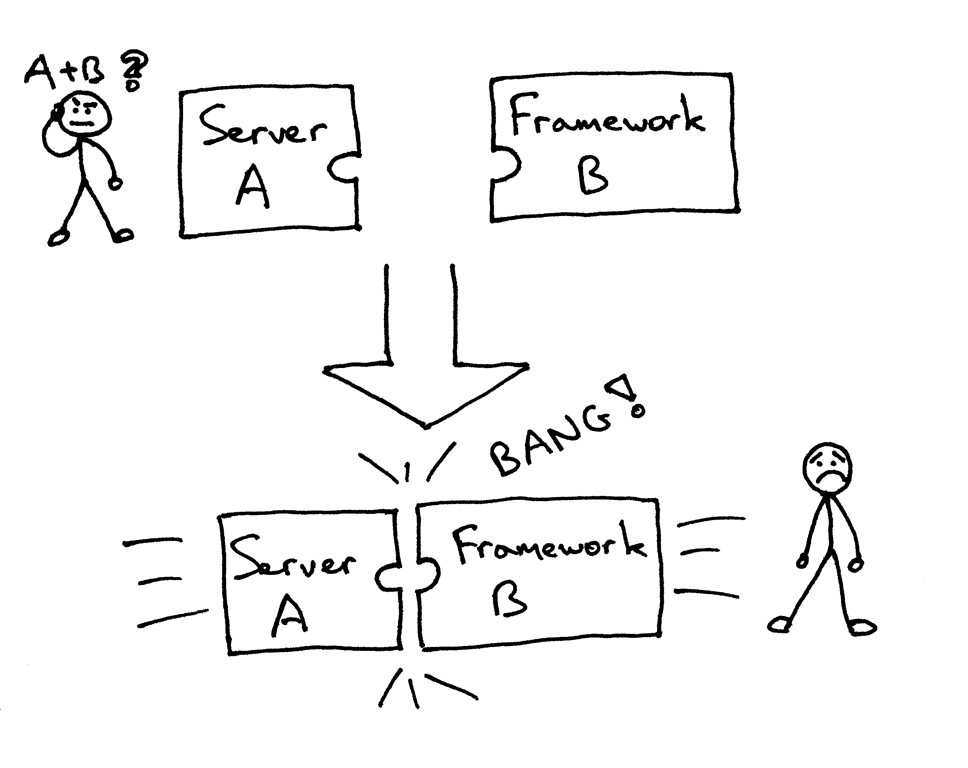
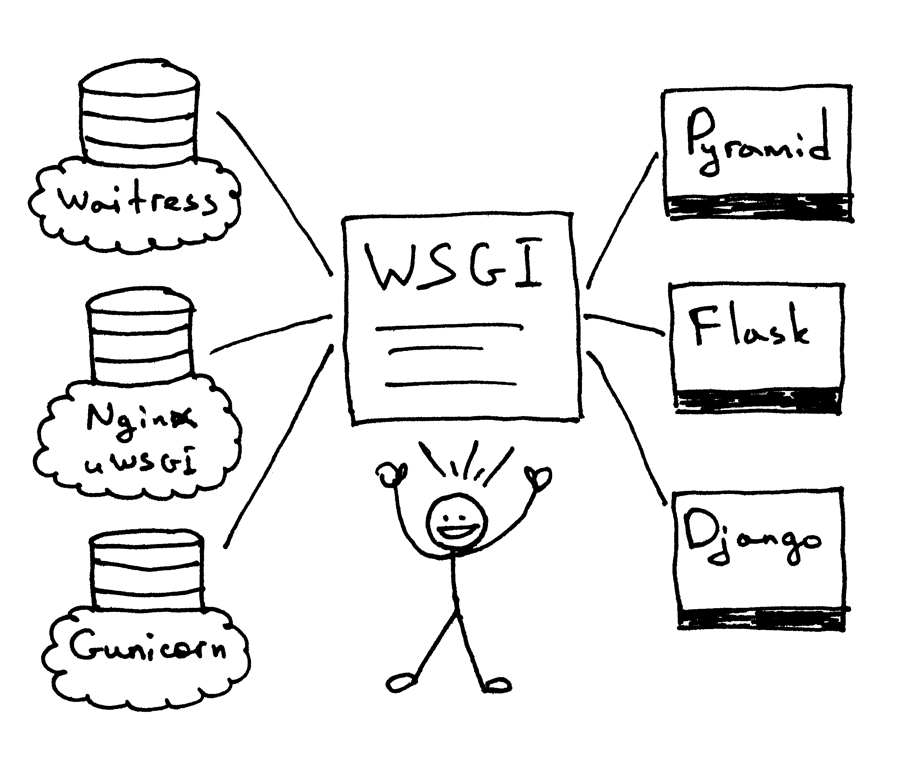

服务器动态资源请求
1. 浏览器请求动态页面过程

2. WSGI
怎么在你刚建立的Web服务器上运行一个Django应用和Flask应用，如何不做任何改变而适应不同的web架构呢？
在以前，选择 Python web 架构会受制于可用的web服务器，反之亦然。如果架构和服务器可以协同工作，那就好了：

但有可能面对（或者曾有过）下面的问题，当要把一个服务器和一个架构结合起来时，却发现他们不是被设计成协同工作的：

那么，怎么可以不修改服务器和架构代码而确保可以在多个架构下运行web服务器呢？答案就是 Python Web Server Gateway Interface (或简称 WSGI，读作“wizgy”)。
WSGI允许开发者将选择web框架和web服务器分开。可以混合匹配web服务器和web框架，选择一个适合的配对。比如,可以在Gunicorn 或者 Nginx/uWSGI 或者 Waitress上运行 Django, Flask, 或 Pyramid。真正的混合匹配，得益于WSGI同时支持服务器和架构：

web服务器必须具备WSGI接口，所有的现代Python Web框架都已具备WSGI接口，它让你不对代码作修改就能使服务器和特点的web框架协同工作。
WSGI由web服务器支持，而web框架允许你选择适合自己的配对，但它同样对于服务器和框架开发者提供便利使他们可以专注于自己偏爱的领域和专长而不至于相互牵制。其他语言也有类似接口：java有Servlet API，Ruby 有 Rack。
3.定义WSGI接口
WSGI接口定义非常简单，它只要求Web开发者实现一个函数，就可以响应HTTP请求。我们来看一个最简单的Web版本的“Hello World!”：
def application(environ, start_response):
start_response('200 OK', [('Content-Type', 'text/html')])
return 'Hello World!'
上面的application()函数就是符合WSGI标准的一个HTTP处理函数，它接收两个参数：
- environ：一个包含所有HTTP请求信息的dict对象；
- start_response：一个发送HTTP响应的函数。
整个application()函数本身没有涉及到任何解析HTTP的部分，也就是说，把底层web服务器解析部分和应用程序逻辑部分进行了分离，这样开发者就可以专心做一个领域了
不过，等等，这个application()函数怎么调用？如果我们自己调用，两个参数environ和start_response我们没法提供，返回的str也没法发给浏览器。
所以application()函数必须由WSGI服务器来调用。有很多符合WSGI规范的服务器。而我们此时的web服务器项目的目的就是做一个既能解析静态网页还可以解析动态网页的服务器
4. web服务器-----WSGI协议---->web框架 传递的字典
{
'HTTP_ACCEPT_LANGUAGE': 'zh-cn',
'wsgi.file_wrapper': <built-infunctionuwsgi_sendfile>,
'HTTP_UPGRADE_INSECURE_REQUESTS': '1',
'uwsgi.version': b'2.0.15',
'REMOTE_ADDR': '172.16.7.1',
'wsgi.errors': <_io.TextIOWrappername=2mode='w'encoding='UTF-8'>,
'wsgi.version': (1,0),
'REMOTE_PORT': '40432',
'REQUEST_URI': '/',
'SERVER_PORT': '8000',
'wsgi.multithread': False,
'HTTP_ACCEPT': 'text/html,application/xhtml+xml,application/xml;q=0.9,*/*;q=0.8',
'HTTP_HOST': '172.16.7.152: 8000',
'wsgi.run_once': False,
'wsgi.input': <uwsgi._Inputobjectat0x7f7faecdc9c0>,
'SERVER_PROTOCOL': 'HTTP/1.1',
'REQUEST_METHOD': 'GET',
'HTTP_ACCEPT_ENCODING': 'gzip,deflate',
'HTTP_CONNECTION': 'keep-alive',
'uwsgi.node': b'ubuntu',
'HTTP_DNT': '1',
'UWSGI_ROUTER': 'http',
'SCRIPT_NAME': '',
'wsgi.multiprocess': False,
'QUERY_STRING': '',
'PATH_INFO': '/index.html',
'wsgi.url_scheme': 'http',
'HTTP_USER_AGENT': 'Mozilla/5.0(Macintosh;IntelMacOSX10_12_5)AppleWebKit/603.2.4(KHTML,likeGecko)Version/10.1.1Safari/603.2.4',
'SERVER_NAME': 'ubuntu'
}